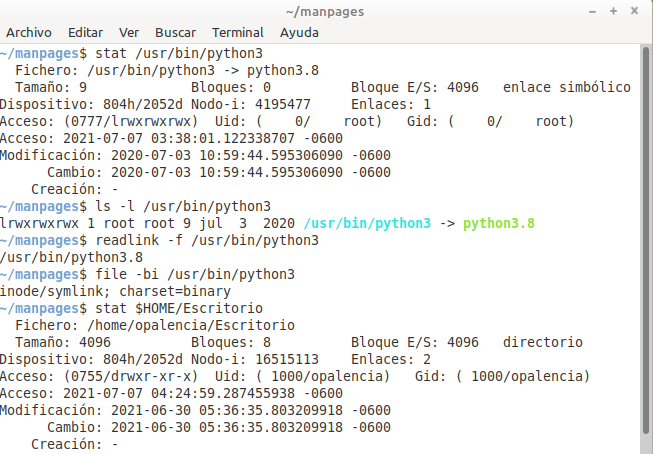

Mostrar el estado de un archivo o carpeta > stat¶
Nombre del comando: stat
Man page online: https://linux.die.net/man/1/stat
Descripción: Muestra información relevante de un archivo o carpeta, tales como, fechas del archivo, número “inode”, número de enlaces (mayores a 1 indica que sí tiene enlaces simbólicos o duros), el tipo de archivo, entre otros datos útiles. Este comando es importante para identificar el origen de un archivo, por ejemplo, la mayoría de distros linux usan “python” para realizar diferentes tareas en dicha distro y por ende siempre traen como mínimo una versión de python instalada por defecto, entonces, si queremos investigar dónde están guardados y qué tipos de archivos son habrá que usar este comando junto con otros para averiguarlo. Estos son los comandos que usé para identificar algunas cosas sobre la versión de python que venía instalada en mi distro: “python3 –version”, “whereis python3”, “find /usr/bin -iname «python3»”, “ls -l /usr/bin/python3”, “readlink -f /usr/bin/python3”, “file -bi /usr/bin/python3”. En conclusión, son varios comandos los que hay conocer para averiguar cosas específicas de un archivo.
Man page local: $ man stat o $ man stat > stat.txt
Instalado por defecto: Sí, al menos en Linux Mint.
Algunas Opciones:
-f, --file-system Muestra el estado del sistema de ficheros en lugar del estado del fichero.
-c --format=FORMAT Usa el FORMATO especificado en vez del predeterminado; muestra una nueva línea después de cada uso del FORMATO.
--version Informa de la versión y finaliza.
Ejemplo 1: $ stat /usr/bin/python3, en este ejemplo quiero saber qué tipo de archivo es este python3. Al usar el comando “stat” sin parámetros me da la información que necesito sobre dicho archivo. Me dice que es un enlace simbólico que hace referencia a un archivo “python3.8”, que su número inode es “4195477”, que la fecha de modificación fue “2020-07-03 10:59:44.595306090 -0600”, entre otros datos.
Ejemplo 2: $ stat $HOME/Escritorio, en este ejemplo quiero conocer información de la carpeta “Escritorio” de mi usuario, dice que es un directorio, que su número inode es “16515113”, que la fecha de modificación fue “2021-06-30 05:36:35.803209918 -0600”, entre otros datos.
Ejemplo 3: $ stat -c %h-%i-%F-%y /etc/lsb-release, en este ejemplo quiero la siguiente información de este archivo (el cual guarda información de la versión del Sistema Operativo) que se crea al instalar la distro: el número de enlaces “1”, el número inode “4718787”, el tipo de archivo “fichero regular” y la fecha en que se modificó “2020-04-09 05:44:08.000000000 -0600”.